PM_Generator: Программа расчета параметров дискового или цилиндрического однофазного электрогенератора на постоянных магнитах
1. Обозначения:
A – средняя ширина прямоугольной или
трапецеидальной (трапецевидной) катушки
AM – расстояние
между центрами соседних магнитов
B0
– магнитная индукция в центре зазора между оппозитными магнитами или амплитудное
значение магнитной индукции в центре катушки
Вообще говоря, при расчетах в качестве параметра B0 следует
использовать среднюю величину магнитной индукции на оси катушки при максимальном
потокосцеплении с источником возбуждающего магнитного поля, но для
рассматриваемых конструкций генераторов среднее значение индукции на оси близко
к значению в центре как для катушек без ферромагнитного сердечника с небольшой
высотой H, так и для катушек с сердечниками.
Br – остаточная индукция магнита
D –
диаметр обмоточного провода катушки
D2 – диаметр цилиндрического магнита
E – длина
прямоугольной или трапецеидальной катушки
EC
– электродвижущая сила (ЭДС) одной катушки
F – частота
вращения ротора
f –
частота выходного напряжения
G –
величина зазора между оппозитными магнитами
h –
толщина (высота) одного магнита
H – высота
катушки
I –
выходной ток генератора под нагрузкой
L – длина
отверстия в прямоугольной или трапецеидальной катушке
LM
– минимальная длина прямоугольного или трапецеидального магнита
M –
крутящий момент на валу под нагрузкой
m – число
обмоток (катушек) генератора
N – число
витков обмотки (катушки)
n –
число магнитных полюсов генератора
P – мощность генератора в нагрузке
R – активное сопротивление одной катушки генератора
RIN
– внутреннее (активное) сопротивление генератора
RH –
сопротивление нагрузки
R1 – радиус отверстия цилиндрической катушки
R2 – внешний радиус цилиндрической катушки
S –
площадь сердечника (или отверстия) в прямоугольной или трапецеидальной катушке
T –
средняя ширина отверстия в прямоугольной или трапецеидальной катушке
TM
– средняя ширина прямоугольного или трапецеидального магнита
U –
действующее выходное напряжение генератора на нагрузке
UC – действующее напряжение
холостого хода одной катушки
UXX – действующее напряжение
холостого хода генератора
l
– фактор упаковки [9]
rE
– удельное электрическое сопротивление обмоточного провода
Fi
– магнитный поток, пронизывающий площадь, охватываемую i-м витком катушки
Y
– потокосцепление обмотки с магнитным полем
w
– угловая скорость вращения ротора
2. Введение
При разработке и изготовлении электрогенераторов [1, 6, 7], в том числе на постоянных магнитах, возникает проблема вихревых токов, которые наводятся в магнитопроводе генератора под воздействием переменного магнитного поля. Решать эту проблему можно разными способами, например, применяя шихтованные магнитопроводы, набранные из тонких листов электротехнической стали, или, используя в качестве материала магнитопровода ферромагнетики с высоким удельным сопротивлением (феррит, альсифер и т. п.). Оба эти метода имеют свои недостатки. Сердечники из листовой электротехнической стали достаточно сложны в изготовлении, а ферромагнетики с высоким удельным сопротивлением, как правило, имеют низкую индукцию насыщения. Еще один метод решения проблемы вихревых токов – изменение конструкции генератора таким образом, чтобы в нем отсутствовали детали магнитопровода, движущиеся относительно возбуждающего магнитного поля.
3. Конструкция электрогенератора
Генератор, в котором возбуждающее магнитное поле вращается вместе с магнитопроводом, по форме исполнения может быть либо дисковым (аксиальным), либо цилиндрическим (радиальным).
3.1. Конструкция дискового генератора с постоянными магнитами
Конструкция дискового генератора представлена на рис. 3.1.1.
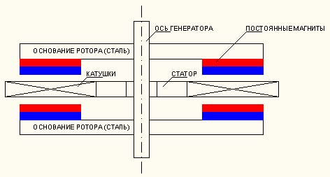
Рис. 3.1.1. Конструкция дискового генератора: ротор с постоянными магнитами, статор – катушки без сердечников.
Генератор состоит из ротора и статора. Ротор представляет собой два закрепленных на оси стальных диска, на которых установлены постоянные магниты в виде секторов или трапеций (или даже прямоугольной формы при большом числе магнитов), обращенные друг к другу разноименными полюсами (чтобы поля оппозитных магнитов в рабочем зазоре между дисками складывались). Между магнитами расположен дисковый статор, представляющий из себя секторные катушки, уложенные друг за другом по кругу, образуя диск. Так как поле возбуждения, создаваемое постоянными магнитами, вращается вместе с магнитопроводом (стальными дисками) с одной угловой скоростью, то, соответственно, вихревых токов в нем оно не создает.
3.2. Конструкция цилиндрического генератора с постоянными магнитами
Конструкция цилиндрического генератора представлена на рис. 3.2.1.
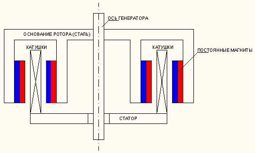
Рис. 3.2.1. Конструкция цилиндрического генератора: ротор с постоянными магнитами, статор – катушки без сердечников.
Генератор состоит из ротора и статора. Ротор представляет собой два закрепленных на оси стальных цилиндра, на которых установлены постоянные магниты в виде слегка изогнутых сегментов прямоугольной формы (или даже прямоугольные призмы при большом числе магнитов), обращенные друг к другу разноименными полюсами (чтобы поля оппозитных магнитов в рабочем зазоре между цилиндрами складывались). Между магнитами расположен цилиндрический статор, представляющий из себя прямоугольные в поперечном сечении катушки, уложенные друг за другом, образуя цилиндр. Так как поле возбуждения, создаваемое постоянными магнитами, вращается вместе с магнитопроводом (стальными цилиндрами) с одной угловой скоростью, то, соответственно, вихревых токов в нем оно не создает.
4. Общие соотношения
В соответствии с законом электромагнитной индукции Фарадея [5] под действием переменного магнитного поля в обмотке (катушке) возникает электродвижущая сила (ЭДС) EC. Она равна сумме ЭДС отдельных витков и определяется выражением:

где N – число витков обмотки (катушки), Fi – магнитный поток, пронизывающий площадь, охватываемую i-м витком

– потокосцепление обмотки с магнитным полем. Полагая, что потокосцепление изменяется по гармоническому закону:
где Y0 – максимальное потокосцепление магнита и обмотки, n – число полюсов ротора, w – угловая скорость вращения ротора (радианы в секунду), получим:
Так как w = 2 p F, где F – частота вращения ротора (обороты в секунду), то

Действующее напряжение холостого хода одной катушки UC:
Если число полюсов генератора равно числу катушек (m = n), то ЭДС генератора E при их последовательном соединении (с учетом фазировки):
Амплитуда ЭДС генератора E0:
Действующее выходное напряжение UXX генератора при отсутствии нагрузки (напряжение холостого хода):
При необходимости число катушек генератора можно уменьшить или увеличить на одну без их перекоммутации (m = n – 1, m = n + 1). Это может понадобиться при использовании катушек с ферромагнитными сердечниками для уменьшения залипания ротора за счет притяжения сердечников к магнитам. Если общее число обмоток для одной фазы равно m, то угол между соседними катушками составляет 2p/m, а между соседними магнитами – 2p/n. Разница геометрических углов составит 2p(n – m)/(nm). Сдвиг ЭДС на 2p для одной катушки соответствует углу между двумя ближайшими однополюсными магнитами, т. е. 4p/n. Таким образом добавочный сдвиг по фазе ЭДС каждой следующей катушки по сравнению с предыдущей будет равен доле от 2p, равной отношению разницы геометрических углов между катушкой и магнитом к углу между двумя ближайшими однополюсными магнитами:
Если все катушки соединены последовательно, то ЭДС генератора с m катушками может быть рассчитана как сумма ЭДС всех катушек с учетом фазового сдвига:
(для катушки с индексом k = 0 фазовый сдвиг равен нулю, для катушки с индексом k = m фазовый сдвиг равен p (n – m), т. е. также дает нулевой вклад). Вычисляя сумму тригонометрических функций [4], получаем:
Для m = n – 1 амплитуда ЭДС генератора:
Напряжение холостого хода генератора:
Для m = n + 1 амплитуда ЭДС генератора:
Напряжение холостого хода:
Частота выходного напряжения f:
Таким образом, для расчета выходного напряжения генератора необходимо найти амплитудное значение потокосцепления катушки с магнитным полем Y0. Для определения выходной мощности и коэффициента полезного действия (КПД) необходимо будет найти активное сопротивление одной обмотки R. Тогда при последовательном соединении катушек внутреннее сопротивление RIN генератора будет равно сумме сопротивлений всех m обмоток:
Выходной ток I генератора под нагрузкой сопротивлением RH:
Выходное напряжение генератора на нагрузке U:
Выходная мощность генератора P:
Мощность, рассеиваемая в обмотках генератора определяется соотношением:
Требуемый крутящий момент на валу генератора под нагрузкой M:
КПД генератора может быть найден из соотношения:
5. Расчет потокосцепления и активного сопротивления обмоток
5.1. Расчет трапецеидальной катушки дискового генератора
5.1.1. Расчет параметров обмотки
В генераторе могут использоваться катушки без ферромагнитного сердечника или с ферромагнитным сердечником из шихтованной электротехнической стали. Чтобы получить максимальное потокосцепление и вписаться в заданные габариты, необходимо использовать катушки и постоянные магниты в виде секторов, которые с достаточно хорошим приближением можно представить в форме трапеций (если число секторов на круг не меньше 8, с уменьшением числа секторов до 4 точность представления существенно ухудшается, а когда их меньше 4, то становится неприемлемой). При этом катушки следует наматывать на оправку треугольной или трапецеидальной формы. Эскиз катушки представлен на рис. 5.1.1.1.
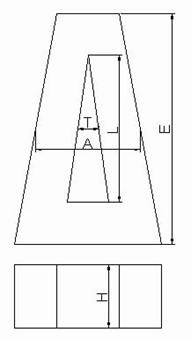
Рис. 5.1.1.1. Эскиз трапецеидальной катушки.
Геометрические параметры
трапецеидальной катушки:
T
– ширина отверстия в катушке по средней линии трапеции
A –
ширина катушки по средней линии трапеции
L –
длина отверстия в катушке
E –
длина катушки
H – высота катушки
Так как A – T ≈ E – L, то E ≈ A – T + L
Число витков N трапецеидальной катушки может быть достаточно точно найдено по формуле:
где l – фактор упаковки, D – диаметр обмоточного провода. Активное сопротивление R трапецеидальной катушки достаточно точно определяется выражением:
где rE – удельное электрическое сопротивление обмоточного провода. Если m катушек генератора соединены последовательно, то внутреннее сопротивление генератора RIN может быть найдено следующим образом:
5.1.2. Расчет потокосцепления трапецеидальной катушки без сердечника
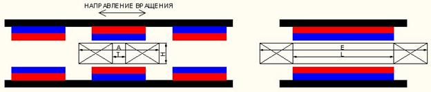
Для получения максимального потокосцепления величина A должна быть как можно ближе к расстоянию между центрами соседних магнитами AM, а длина отверстия в катушке L должна быть примерно равна длине магнитов. Амплитуда потокосцепления катушки и создаваемого системой постоянных магнитов магнитного поля Y0 (момент, когда катушка находится точно между полюсами) определяется посредством формулы:
где Bn(x) – среднее значение нормальной составляющей магнитной индукции к плоскости намотки в пределах контура площадью S(x), N – число витков, x – переменная интегрирования (расстояние от центра катушки до заданной точки по линии размера A). Вычисление амплитуды потокосцепления производится с помощью программы PM_Generator.
Выходное напряжение
генератора (и, соответственно, выходная мощность) достигает максимума при
максимальном заполнении обмоткой пространства между магнитами, а именно:
- минимальном отверстии в катушке (T → 0)
- ширине катушки, равной расстоянию между магнитами (A → AM)
- максимальной высоте катушке H, которую ограничивает только необходимость
наличия конструктивных зазоров между магнитами и катушками
- максимальном значении фактора упаковки
l.
А также когда число катушек m равно числу полюсов n.
Кроме того, величина потокосцепления, определяющая выходное напряжение генератора, зависит от произведения B0 ∙ H. При увеличении высоты катушки H (и, соответственно, расстояния между оппозитными постоянными магнитами) величина магнитной индукции B0 уменьшается. Их произведение при этом может иметь локальный максимум (при некоторой величине H). Соответствующая этому максимуму высота катушки H, а также расстояние между оппозитными магнитами (равное сумме высоты катушки и конструктивных зазоров) будет оптимальной для снятия максимума мощности с генератора.
5.1.3. Расчет потокосцепления трапецеидальной катушки с сердечником
Для получения максимального потокосцепления средняя ширина катушки A должна быть как можно ближе к расстоянию между центрами соседних магнитами AM, а длина сердечника в катушке L должна быть примерно равна длине магнитов. Чтобы обеспечить монотонно возрастающее (убывающее) изменение потокосцепления при повороте ротора, необходимо либо принять ширину сердечника T примерно равной ширине магнита TM, либо добавить к сердечнику полюсные наконечники, перекрывающие магнит по ширине. В любом случае для предотвращения магнитного насыщения ширина (и, соответственно, площадь) сердечника не должны быть слишком малы.
При использовании сердечника магнитное поле будет в основном сосредоточено в нем и распределено равномерно. Амплитуда потокосцепления катушки и создаваемого системой постоянных магнитов магнитного поля Y0 (момент, когда катушка находится точно между полюсами) определяется посредством формулы:
где N – число витков обмотки, S – площадь сердечника, B0 – индукция магнитного поля в сердечнике. Вычисление амплитуды потокосцепления производится с помощью программы PM_Generator.
Выходное напряжение
генератора (и, соответственно, выходная мощность) достигает максимума при
максимальном заполнении обмоткой пространства между магнитами, а именно:
- ширине катушки, равной расстоянию между магнитами (A → AM)
- максимальной высоте катушке H, которую ограничивает только необходимость
наличия полюсных наконечников и конструктивных зазоров между магнитами и
катушками
- максимальном значении фактора упаковки
l.
А также когда число катушек m равно числу полюсов n.
Величина потокосцепления, определяющая выходное напряжение генератора, зависит от произведения B0 ∙ H. При увеличении высоты катушки H (и, соответственно, расстояния между оппозитными постоянными магнитами) величина магнитной индукции B0 уменьшается. Их произведение при этом может иметь локальный максимум (при некоторой величине H). Соответствующая этому максимуму высота катушки H, а также расстояние между оппозитными магнитами (равное сумме высоты катушки и конструктивных зазоров) будет оптимальной для снятия максимума мощности с генератора. Кроме того, величина потокосцепления зависит от произведения B0 ∙ (A – T) T. В нулевом приближении при выполнении предположения B0 = const максимум достигается при T = A/2.
5.2. Расчет цилиндрической катушки дискового генератора
5.2.1. Расчет параметров обмотки
Использование цилиндрических форм катушек и постоянных магнитов в электрогенераторах менее эффективно, но привлекает доступностью цилиндрических постоянных магнитов. Эскиз цилиндрической катушки (цилиндрического соленоида) представлен на рис. 5.2.1.1.
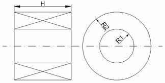
Рис. 5.2.1.1. Эскиз цилиндрической катушки.
Геометрические
параметры цилиндрической катушки:
R1 – внутренний радиус соленоида (радиус отверстия)
R2 – внешний радиус соленоида
H – высота соленоида
Расчет числа витков N обмотки цилиндрического соленоида производится по формуле:
где l – фактор упаковки, D – диаметр обмоточного провода. Расчет активного сопротивления R цилиндрического соленоида производится по формуле:
где rE – удельное электрическое сопротивление обмоточного провода. Если m катушек генератора соединены последовательно, то внутреннее сопротивление генератора RIN может быть найдено следующим образом:
5.2.2. Расчет потокосцепления цилиндрической катушки без сердечника
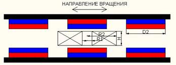
Для получения максимального потокосцепления величина R2 должна быть как можно ближе к половине расстояния между центрами соседних магнитами AM (максимальное заполнение обмоткой доступного пространства). Амплитуда потокосцепления катушки и создаваемого системой постоянных магнитов магнитного поля Y0 (момент, когда катушка находится точно между полюсами) определяется посредством формулы:
где Bn(x) – среднее значение нормальной составляющей магнитной индукции к плоскости намотки в пределах контура площадью S(x), N – число витков, x – переменная интегрирования (расстояние от центра катушки до заданной точки по линии размеров R1, R2). Вычисление амплитуды потокосцепления производится с помощью программы PM_Generator.
Выходное напряжение
генератора (и, соответственно, выходная мощность) достигает максимума при
максимальном заполнении обмоткой пространства между магнитами, а именно:
- минимальном отверстии в катушке (R1 → 0)
- диаметре катушки, равному расстоянию между магнитами (2 R2 →
AM)
- максимальной высоте катушке H, которую ограничивает только необходимость
наличия конструктивных зазоров между магнитами и катушками
- максимальном значении фактора упаковки
l.
А также когда число катушек m равно числу полюсов n.
Кроме того, величина потокосцепления, определяющая выходное напряжение генератора, зависит от произведения B0 ∙ H. При увеличении высоты катушки H (и, соответственно, расстояния между оппозитными постоянными магнитами) величина магнитной индукции B0 уменьшается. Их произведение при этом может иметь локальный максимум (при некоторой величине H). Соответствующая этому максимуму высота катушки H, а также расстояние между оппозитными магнитами (равное сумме высоты катушки и конструктивных зазоров) будет оптимальной для снятия максимума мощности с генератора.
5.2.3. Расчет потокосцепления цилиндрической катушки с сердечником
Для получения максимального потокосцепления величина R2 должна быть как можно ближе к половине расстояния между центрами соседних магнитами AM (максимальное заполнение обмоткой доступного пространства). Чтобы обеспечить монотонно возрастающее (убывающее) изменение потокосцепления при повороте ротора, необходимо либо принять диаметр сердечника 2∙R1 равным диаметру магнита D2, либо добавить к сердечнику полюсные наконечники, перекрывающие магнит по диаметру. В любом случае для предотвращения магнитного насыщения диаметр (и, соответственно, площадь) сердечника не должны быть слишком малы.
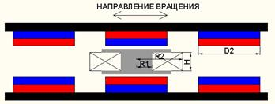
При использовании сердечника магнитное поле будет в основном сосредоточено в нем и распределено равномерно. Амплитуда потокосцепления катушки и создаваемого системой постоянных магнитов магнитного поля Y0 (момент, когда катушка находится точно между полюсами) определяется посредством формулы:
где N – число витков обмотки, S – площадь сердечника, B0 – индукция магнитного поля в сердечнике. Вычисление амплитуды потокосцепления производится с помощью программы PM_Generator.
Выходное напряжение
генератора (и, соответственно, выходная мощность) достигает максимума при
максимальном заполнении обмоткой пространства между магнитами, а именно:
- диаметре катушки, равному расстоянию между магнитами (2 R2 →
AM)
- максимальной высоте катушке H, которую ограничивает только необходимость
наличия полюсных наконечников и конструктивных зазоров между магнитами и
катушками
- максимальном значении фактора упаковки
l.
А также когда число катушек m равно числу полюсов n.
Кроме того, величина потокосцепления, определяющая выходное напряжение генератора, зависит от произведения B0 ∙ H. При увеличении высоты катушки H (и, соответственно, расстояния между оппозитными постоянными магнитами) величина магнитной индукции B0 уменьшается. Их произведение при этом может иметь локальный максимум (при некоторой величине H). Соответствующая этому максимуму высота катушки H, а также расстояние между оппозитными магнитами (равное сумме высоты катушки и конструктивных зазоров) будет оптимальной для снятия максимума мощности с генератора. Кроме того, величина потокосцепления зависит от произведения B0 ∙ R12 ∙ (R2 – R1). В нулевом приближении при выполнении предположения B0 = const максимум достигается при R1 = (2/3)R2.
5.3. Расчет прямоугольной катушки цилиндрического генератора
5.3.1. Расчет параметров обмотки
В генераторе могут использоваться катушки без ферромагнитного сердечника или с ферромагнитным сердечником из шихтованной электротехнической стали. Постоянные магниты ротора и катушки представляют собой слегка изогнутые сегменты прямоугольной формы в поперечном сечении, чтобы их можно было уложить на поверхность цилиндра. Для расчета можно принять, что магниты и катушки представляют из себя прямоугольные призмы. Эскиз катушки представлен на рис. 5.3.1.1.
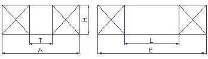
Рис. 5.3.1.1. Эскиз прямоугольной катушки.
Геометрические параметры
прямоугольной катушки:
T – ширина
отверстия в катушке
A – ширина
катушки
L – длина
отверстия в катушке
E – длина
катушки
H – высота
катушки
Так как A – T = E – L, то E = A – T + L
Число витков N прямоугольной катушки может быть найдено по формуле:
где l – фактор упаковки, D – диаметр обмоточного провода. Активное сопротивление R прямоугольной катушки определяется выражением:
где rE – удельное электрическое сопротивление обмоточного провода. Если m катушек одной фазы генератора соединены последовательно, то внутреннее сопротивление одной фазы генератора RIN может быть найдено следующим образом:
5.3.2. Расчет потокосцепления прямоугольной катушки без сердечника
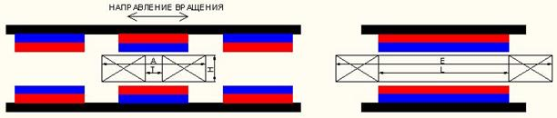
Для получения максимального потокосцепления ширина катушки A должна быть примерно равна расстоянию между центрами соседних магнитов AM, а длина отверстия в катушке L должна быть примерно равна длине магнитов. Амплитуда потокосцепления катушки и создаваемого системой постоянных магнитов магнитного поля Y0 (момент, когда катушка находится точно между полюсами) определяется посредством формулы:
где Bn(x) – среднее значение нормальной составляющей магнитной индукции к плоскости намотки в пределах контура площадью S(x), N – число витков, x – переменная интегрирования (расстояние от центра катушки до заданной точки по линии размера A). Вычисление амплитуды потокосцепления производится с помощью программы PM_Generator.
Выходное
напряжение генератора (и, соответственно, выходная мощность) достигает максимума
при максимальном заполнении обмоткой пространства между магнитами, а именно:
- минимальном отверстии в катушке (T → 0)
- ширине катушки, равной расстоянию между магнитами (A → AM)
- максимальной высоте катушке H, которую ограничивает только необходимость
наличия конструктивных зазоров между магнитами и катушками
- максимальном значении фактора упаковки
l.
А также когда число катушек m равно числу полюсов n.
Величина потокосцепления, определяющая выходное напряжение генератора, зависит от произведения B0 ∙ H. При увеличении высоты катушки H (и, соответственно, расстояния между оппозитными постоянными магнитами) величина магнитной индукции B0 уменьшается. Их произведение при этом может иметь локальный максимум (при некоторой величине H). Соответствующая этому максимуму высота катушки будет оптимальной для снятия максимума мощности с генератора.
5.3.3. Расчет потокосцепления прямоугольной катушки с сердечником
Для получения максимального потокосцепления ширина катушки A должна быть как можно ближе к расстоянию между центрами соседних магнитами AM, а длина сердечника в катушке L должна быть примерно равна длине магнитов. Чтобы обеспечить монотонно возрастающее (убывающее) изменение потокосцепления при повороте ротора, необходимо либо принять ширину сердечника T примерно равной ширине магнита TM, либо добавить к сердечнику полюсные наконечники, перекрывающие магнит по ширине. В любом случае для предотвращения магнитного насыщения ширина (и, соответственно, площадь) сердечника не должны быть слишком малы.
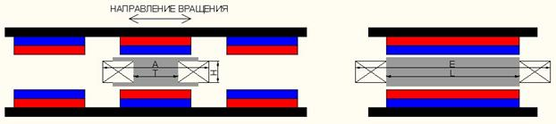
При использовании сердечника магнитное поле будет в основном сосредоточено в нем и распределено равномерно. Амплитуда потокосцепления катушки и создаваемого системой постоянных магнитов магнитного поля Y0 (момент, когда катушка находится точно между полюсами) определяется посредством формулы:
где N – число витков обмотки, S – площадь сердечника, B0 – индукция магнитного поля в сердечнике. Вычисление амплитуды потокосцепления производится с помощью программы PM_Generator.
Выходное напряжение
генератора (и, соответственно, выходная мощность) достигает максимума при
максимальном заполнении обмоткой пространства между магнитами, а именно:
- ширине катушки, равной расстоянию между магнитами (A → AM)
- максимальной высоте катушке H, которую ограничивает только необходимость
наличия полюсных наконечников и конструктивных зазоров между магнитами и
катушками
- максимальном значении фактора упаковки
l.
А также когда число катушек m равно числу полюсов n.
Величина потокосцепления, определяющая выходное напряжение генератора, зависит от произведения B0 ∙ H. При увеличении высоты катушки H (и, соответственно, расстояния между оппозитными постоянными магнитами) величина магнитной индукции B0 уменьшается. Их произведение при этом может иметь локальный максимум (при некоторой величине H). Соответствующая этому максимуму высота катушки H, а также расстояние между оппозитными магнитами (равное сумме высоты катушки и конструктивных зазоров) будет оптимальной для снятия максимума мощности с генератора. Кроме того, величина потокосцепления зависит от произведения B0 ∙ (A – T) T. В нулевом приближении при выполнении предположения B0 = const максимум достигается при T = A/2.
6. Расчет магнитной индукции в зазоре
Точный расчет магнитной индукции в магнитной системе электрогенератора лучше выполнить методом конечных элементов [3, 11]. Программа PM_Generator позволяет выполнить только приблизительный расчет амплитуды магнитной индукции B0 в зазоре между постоянными магнитами. Впрочем, получаемые значения, как правило, вполне соответствует реальным данным. Для расчета магнитной индукции в зазоре можно привести геометрию магнитной системы к конфигурации, показанной на рис. 6.1 в верхнем ряду (при условии, что магнитное сопротивление стального основания, на котором крепятся магниты, близко к нулю, то есть оно имеет достаточную толщину). Фактически, надо рассмотреть бесконечный набор магнитов удвоенной высоты (толщины) 2h каждый с зазором G между ними (если используются катушки без ферромагнитного сердечника).
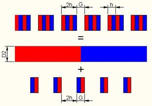
Рис. 6.1. Геометрия магнитной системы магнитов для расчета магнитной индукции в зазоре (в приближении системы цилиндрических постоянных магнитов).
Этот набор может быть представлен в виде суммы одного бесконечно длинного магнита и магнитов высотой (толщиной), равной зазору G, находящихся на расстоянии 2h друг от друга и имеющих противоположную намагниченность. Расчет магнитной индукции постоянного магнита может быть с достаточно хорошей точностью произведен методом эквивалентного соленоида [9]. Магнитная индукция в произвольной точке при известных геометрических размерах и остаточной индукции магнита Br может быть найдена численными методами [2]. А магнитная индукция на оси цилиндрического магнита (ось Z, аксиальная координата относительно центра магнита – z) диаметра D2 высотой (толщиной) h определяется аналитической формулой:
где Br – остаточная индукция магнита. В соответствии с принципом суперпозиции магнитных полей магнитная индукция B0 в центре зазора величиной G сумме магнитной индукции полей однонаправленных магнитов высотой (толщиной 2h) G на разных расстояниях от их центров. В первом приближении диаметр магнита можно считать равным средней ширине магнита (D2 = TM), а вклад удаленных магнитов равным нулю (т. е. учитывать только четыре соседних магнита толщиной 2h каждый). Тогда:
Или:
Другой способ расчета заключается в следующем. В соответствии с принципом суперпозиции магнитных полей магнитная индукция B0 в центре зазора величиной G будет равна сумме магнитной индукции в бесконечно длинном магните (т. е. Br) и магнитной индукции полей противоположно направленных магнитов высотой (толщиной G) на разных расстояниях от их центров, т. е.:
В первом приближении диаметр магнита можно считать равным средней ширине магнита (D2 = TM). Тогда:
Или:
Причем во многих случаях в последнем уравнении суммой по k (от 1 до ∞) можно пренебречь.
Если используются катушки высотой H с ферромагнитным сердечником, высота которого примерно равна высоте катушки (т. е. тоже H), то в вышеприведенных формулах вместо 2h следует использовать 2h + H, а вместо G использовать G – H. Когда поперечная площадь сердечника отличается от поперечной площади магнита, то магнитный поток в сердечнике либо сжимается либо расширяется пропорционально отношению этих площадей, соответственно изменяется и магнитная индукция (возрастает или уменьшается). Т. е. необходимо рассчитанное выше значение магнитной индукции дополнительно умножить на поправочный коэффициент TM/T или (D2)2/(2R1)2, с учетом того, что индукция насыщения электротехнической стали не превышает примерно 2 Тл.
7. Программа Permanent Magnet Generator (PM_Generator)
Программа для расчета параметров электрогенераторов на постоянных магнитах Permanent Magnet Generator (PM_Generator) предназначена для работы в операционной среде Windows. После запуска программы на экране монитора появляется ее главное окно (рис. 7.1).
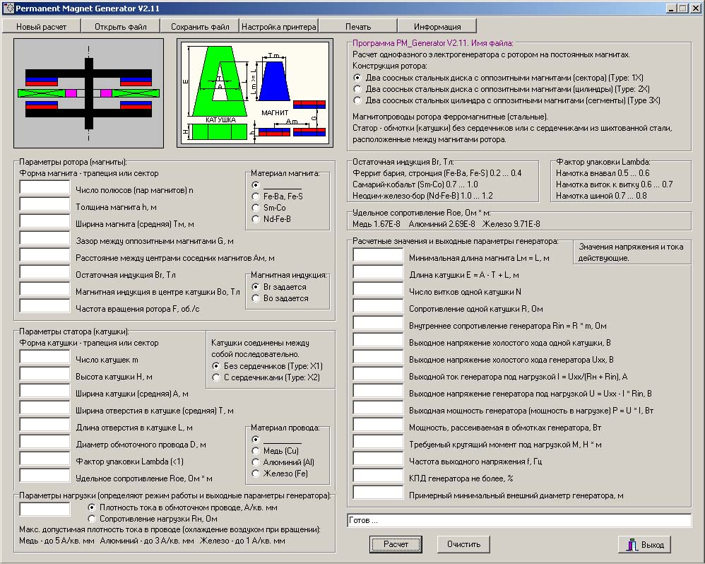
Рис. 7.1. Окно программы PM_Generator V 2.11.
Пользователь может задать исходные данные (входные параметры) электрогенератора вручную, выбрав вначале с помощью переключателя «Конструкция ротора» тип генератора. Переход от одного входного окошка к другому, а также между кнопками, происходит с помощью либо указателя мыши, либо клавиши табуляции. Для расчета нескольких генераторов одновременно можно запустить программу необходимое число раз. Можно также считать входные параметры из файла, если таковой имеется, нажав кнопку «Открыть файл». При нажатии кнопки «Новый расчет» все окошки программы очищаются.
Исходные данные должны быть представлены в системе СИ. В качестве десятичного разделителя для исходных данных можно использовать как точку, так и запятую, но лучше применять разделитель, принятый для десятичной дроби в операционной системе (ОС) данного компьютера.
При вводе данных в экспоненциальном формате (например, 1.67E-8 вместо 0.0000000167) необходимо использовать латинский алфавит для буквы E, при вводе русской буквы Е вместо латинской E на экран монитора при попытке расчета будет выводиться сообщение об ошибке (к цифрам это не относится).
При расчете следует помнить, что потокосцепление катушки с возбуждающим магнитным полем при вращении ротора должно изменяться по синусоидальному (косинусоидальному) закону. Это условие должна обеспечивать сама конструкция магнитной системы электрогенератора, программа его не проверяет. Если магнитная система данное условие не обеспечивает, то рассчитанные с помощью программы PM_Generator параметры электрогенератора (напряжение, ток, мощность) будут отклоняться от реальных из-за наличия высших гармоник в выходном сигнале.
Магнитная индукция в центре зазора (амплитудное значение магнитной индукции в центре катушки при максимальном потокосцеплении) B0 может быть либо приблизительно рассчитана с помощью самой программы PM_Generator по заданной остаточной магнитной индукции Br постоянных магнитов (переключатель «Br задается»), либо вычислена иными средствами, например, методом конечных элементов [3, 11] и подставлена в соответствующее окно программы (переключатель «B0 задается»). Вообще говоря, программа позволяет рассчитывать параметры и других конструкций генераторов по заданным параметрам катушек. В качестве параметра B0 следует использовать среднюю величину магнитной индукции на оси катушки при ее максимальном потокосцеплении с источником возбуждающего магнитного поля.
При малом числе полюсов генератора (обычно меньше 6) формы магнитов или катушек начинают существенно отличаться от принятых в программе, поэтому точность расчетов вследствие этого может ухудшиться.
После задания всех исходных данных можно начать расчет с помощью кнопки «Расчет», нажав на нее с помощью мыши, либо нажав клавишу ввода (если какой либо из входных параметров отсутствует, то при попытке расчета будет выводиться сообщение об ошибке). Программа производит проверку корректности введенных данных на их соответствие возможному физическому диапазону и друг другу. Если проверка выявляет ошибку в задании входных данных, то в главном окне программы в строке готовности над кнопками «Расчет», «Очистить», «Выход» появляется сообщение о необходимости внести соответствующее исправление. Если входные данные введены правильно, то программа производит вывод расчетных значений в соответствующие окошки (рис. 7.2). При необходимости их можно очистить, нажав кнопку «Очистить».
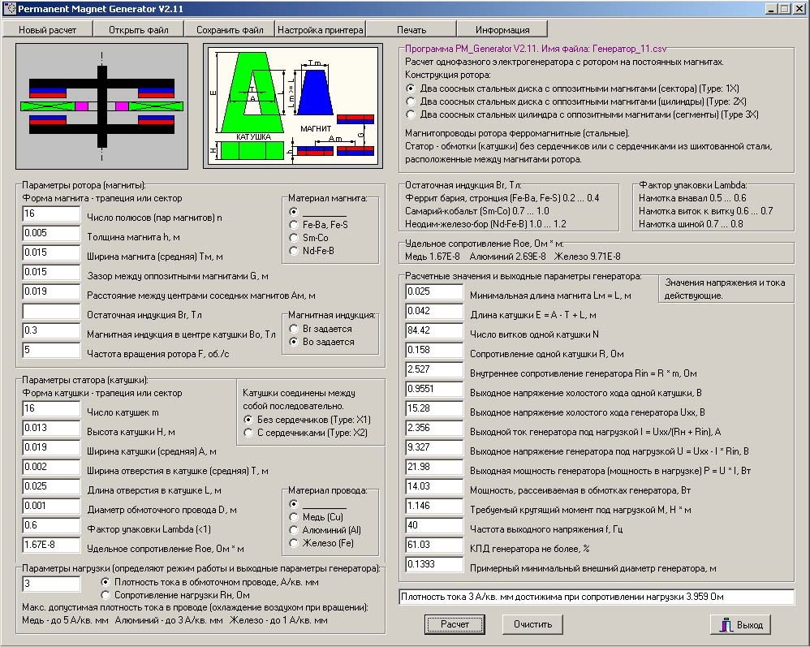
Рис. 7.2. Окно программы PM_Generator V 2.11 с расчетными значениями для пробных входных данных (имя рабочего файла Генератор_11.csv).
Полученный результат можно записать в файл, нажав на кнопку «Сохранить файл». В результате пользователь получит два файла: FileName.csv для входных параметров и FileName_Result.csv для расчетных данных, где FileName – имя файла. Для числовых данных в сохраняемых файлах предусмотрен выбор формата десятичного разделителя – точка или запятая. Фйл входных параметров FileName.csv можно использовать для дальнейшей работы с программой. Структуры файлов, соответствующие вышеприведенному расчету (рис. 7.2), показаны на рис. 7.3 и 7.4.
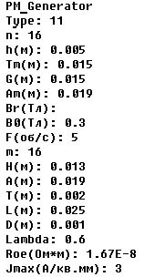
Рис. 7.3. Структура файла FileName.csv.
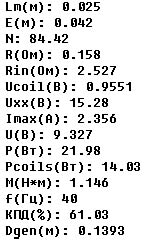
Рис. 7.4. Структура файла FileName_Results.csv.
Для вывода данных на печать служат кнопки «Настройка принтера» и «Печать».
Получить дополнительную информацию о возможности программы можно, нажав кнопку «Информация» (рис. 7.5). Чтобы закончить работу с программой, следует нажать кнопку «Выход» или закрыть окно кнопкой вверху справа.
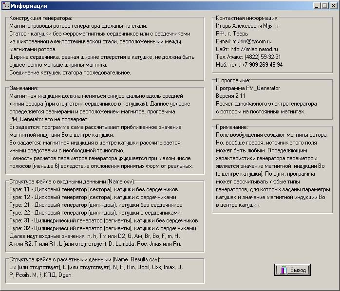
Рис. 7.5. Окно «Информация» программы PM_Generator V 2.11.
Демонстрационная версия программы PM_Generator V 2.11: PM_Generator_V211_Demo.rar (~215 Кбайт, архиватор WinRAR 3.50).
Демонстрационная версия программы PM_Generator имеет следующие ограничения. Мощность рассчитываемых генераторов не более 100 Вт при частоте вращения ротора не более 5 оборотов в секунду. Возможность работы с файлами отсутствует, исходные данные (входные параметры) можно вводить только вручную. Также нельзя вывести исходные и рассчитанные данные на печать. Проверить правильность расчета на данном компьютере для пробных входных данных можно по главному окну программы на рис. 7.2.
По вопросу получения полной версии программы PM_Generator, а также соответствующей ей методики расчета электрогенераторов, обращайтесь к автору (см. раздел Контактная информация).
8. Примеры расчетов
8.1. Расчет 6-полюсного низкооборотного электрогенератора [1]
Конструкция генератора отличается от рассмотренных в п. 3, тем не менее, как указано выше в п. 7, расчет может быть выполнен по известному среднему значению магнитной индукции B0 в сердечнике цилиндрической катушки при максимальном потокосцеплении с возбуждающим магнитным полем. Чтобы его найти, можно воспользоваться методом конечных элементов [3, 11], а затем сравнить расчетное значение магнитной индукции в воздушном зазоре между постоянным магнитом и полюсным наконечником катушки с измеренным на экспериментальной модели. Если эти значения соответствуют друг другу, то можно сделать вывод, что расчетная модель хорошо согласуется с реальной. На рис. 8.1.1 показана расчетная трехмерная модель магнитной системы электрогенератора в программе Ansoft Maxwell [3]. Стальные детали, показанные серым цветом, изготовлены из малоуглеродистой стали, магнитные свойства которой представлены на рис. 8.1.2.
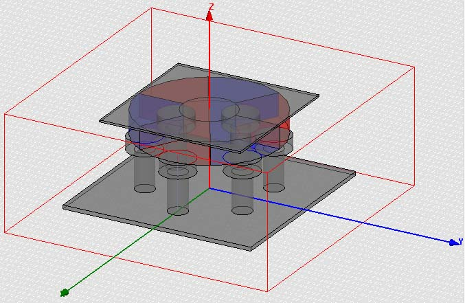
Рис. 8.1.1. Трехмерная расчетная модель магнитной системы электрогенератора с дисковым ротором на постоянных магнитах [1] в программе Ansoft Maxwell [3]. Шаг сетки 1 мм. Стальные детали показаны серым цветом, постоянные магниты - красным и синим. Обмотки не показаны.
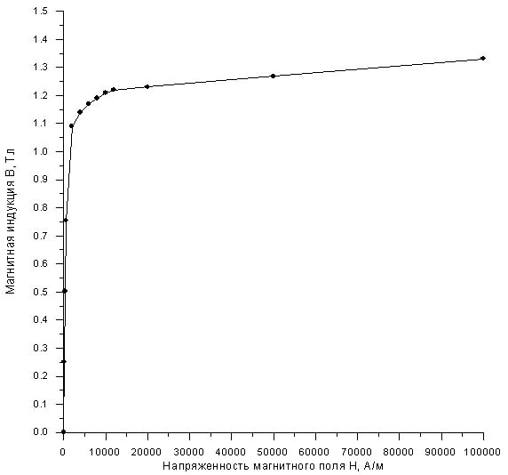
Рис. 8.1.2. Кривая намагничивания малоуглеродистой стали, использованной при изготовлении модели 6-полюсного низкооборотного электрогенератора [1].
6-полюсный постоянный магнит, сектора которого показаны синим и красным цветом, имеет состав Fe-B, типоразмер К75 х 28 х 12, остаточную индукцию 0.35 Тл, коэрцитивную силу по намагниченности 150 кА/м, намагничен в установке намагничивания [13] с 6-полюсным намагничивающим индуктором. Так как ток в обмотках генератора предполагается равным нулю (реакция якоря отсутствует), то в расчетной модели обмотки отсутствуют. На рис. 8.1.3 показана зависимость магнитной индукции на оси катушки от расстояния от ее основания. Среднее значение магнитной индукции в сердечнике 0.861 Тл.
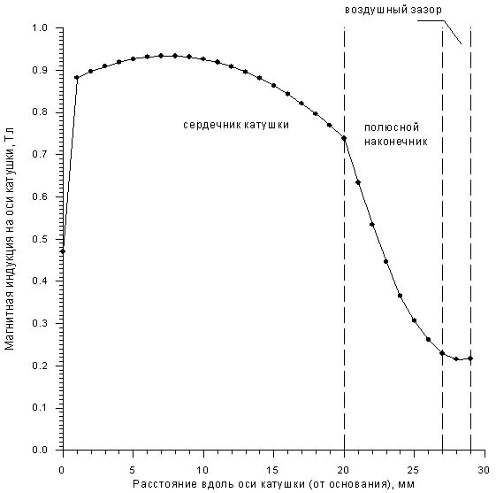
Рис. 8.1.2. Магнитная индукция на оси катушки электрогенератора при максимальном потокосцеплении и нулевом токе в катушке. Магнитная индукция в воздушном зазоре между магнитом и полюсным наконечником катушки 0.22 Тл (усредненное расчетное значение) соответствует измеренной 0.205 Тл. Среднее расчетное значение магнитной индукции в сердечнике катушки 0.861 Тл.
Рассчитанное значение магнитной индукции в воздушном зазоре 0.22 Тл (рис. 8.1.2) не слишком сильно отличается от измеренного (0.205 Тл - усредненное измеренное значение по всем полюсам). Таким образом, можно сделать вывод, что расчетная модель достаточно хорошо соответствует реальной конструкции. Среднее расчетное значение магнитной индукции в сердечнике катушки на длине 20 мм B0 ≈ 0.861 Тл может быть подставлено в программу PM_Generator. Результат расчета показан на рис. 8.1.3 и частично в таблице 8.1.1.

Рис. 8.1.3. Расчет параметров 6-полюсного низкооборотного электрогенератора [1].
Таблица 8.1.1. Соответствие рассчитанных и измеренных параметров 6-полюсного низкооборотного электрогенератора [1].
| Параметр | Рассчитанное значение | Измеренное значение |
| Число витков одной катушки | ≈517 | 500 |
| Внутреннее сопротивление Rin, Ом | 24.94 | 28 |
| Напряжение холостого хода Uxx, В | 2.095 | 1.91 |
Соответствие измеренных и рассчитанных значений достаточно хорошее с учетом того, что форма выходного напряжения генератора отличается от синусоидальной (рис. 8.1.4), а удельное сопротивление обмоточного провода, как правило, несколько больше справочного значения для меди (1.67 ∙ 10-8 Ом ∙ м [12]) из-за наличия примесей.
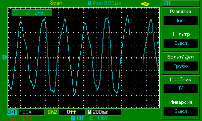
Рис. 8.1.4. Выходное напряжение холостого хода 6-полюсного низкооборотного однофазного электрогенератора [1] при частоте вращения ротора 1 об./с.
8.2. Расчет низкооборотного однофазного электрогенератора с дисковым ротором на постоянных магнитах (18 полюсов, 19 обмоток) [7]
Для данной конструкция генератора, отличающейся от рассмотренных в п. 3, расчет также может быть выполнен по известному среднему значению магнитной индукции B0 в сердечнике цилиндрической катушки при максимальном потокосцеплении с полем возбуждения. Ниже приведены результаты расчета магнитной системы электрогенератора методом конечных элементов [3, 11]. Трехмерная модель магнитной системы показана на рис. 8.2.1. Стальные детали (показаны серым цветом) сделаны из малоуглеродистой стали, кривая намагничивания которой представлена на рис. 8.1.2. Постоянные магниты (показаны зеленым цветом) состава Nd-Fe-B, типоразмера Д14 х 4, остаточная индукция 1.1 Тл, коэрцитивная сила по намагниченности 850 кА/м, намагничены аксиально в установке импульсного намагничивания [13], обмотки на модели отсутствуют, так как ток в обмотках равен нулю (реакция якоря отсутствует). На рис. 8.2.2 показана зависимость величины магнитной индукции на оси катушки от расстояния (от основания катушки).
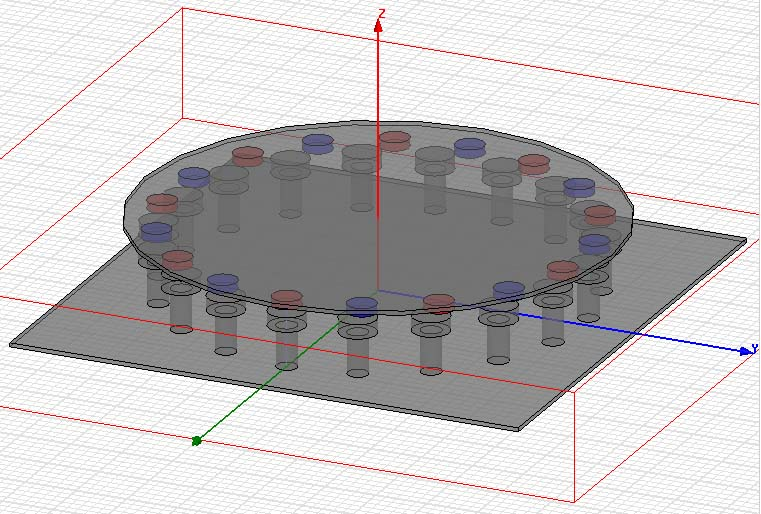
Рис. 8.2.1. Трехмерная расчетная модель магнитной системы электрогенератора с дисковым ротором на постоянных магнитах [7] в программе Ansoft Maxwell [3]. Шаг сетки 5 мм. Стальные детали показаны серым цветом, постоянные магниты - красным и синим, обмотки не показаны.
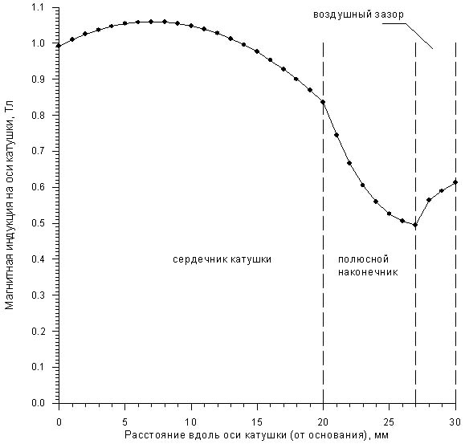
Рис. 8.2.2. Магнитная индукция на оси катушки электрогенератора при максимальном потокосцеплении и нулевом токе в катушке. Магнитная индукция в воздушном зазоре между магнитом и полюсным наконечником катушки 0.565 Тл (среднее расчетное значение) соответствует измеренной 0.573 Тл. Среднее расчетное значение магнитной индукции в сердечнике катушки 0.999 Тл.
Рассчитанное значение магнитной индукции в воздушном зазоре 0.565 Тл (рис. 8.2.2) не слишком сильно отличается от измеренного (0.573 Тл - усредненное измеренное значение по всем полюсам). Таким образом, можно сделать вывод, что расчетная модель достаточно хорошо соответствует реальной конструкции. Среднее расчетное значение магнитной индукции в сердечнике катушки на длине 20 мм B0 ≈ 0.999 Тл может быть подставлено в программу PM_Generator. Результат расчета показан на рис. 8.2.3 и частично в таблице 8.2.1.
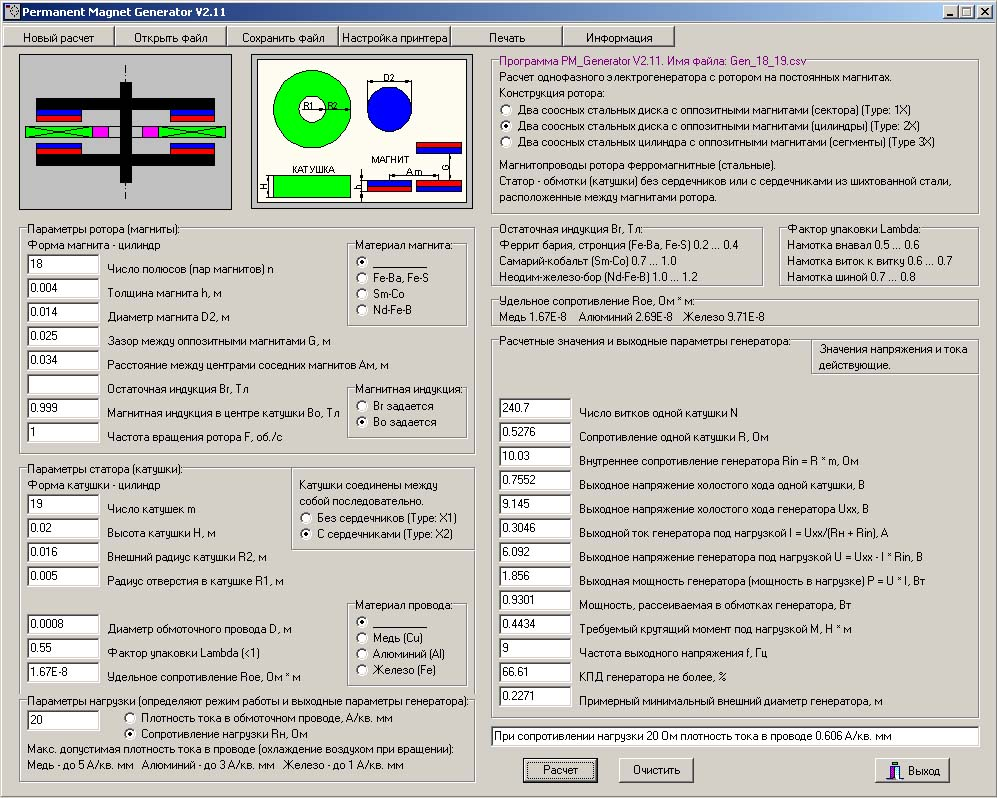
Рис. 8.2.3. Расчет параметров низкооборотного однофазного электрогенератора с дисковым ротором на постоянных магнитах [7].
Таблица 8.2.1. Соответствие рассчитанных и измеренных параметров низкооборотного однофазного электрогенератора с дисковым ротором на постоянных магнитах [7].
| Параметр | Рассчитанное значение | Измеренное значение |
| Число витков одной катушки | ≈241 | 250 |
| Внутреннее сопротивление Rin, Ом | 10.03 | 11.2 |
| Напряжение холостого хода Uxx, В | 9.145 | 7.3 |
Соответствие измеренных и рассчитанных значений приемлемое с учетом того, что форма выходного напряжения генератора отличается от синусоидальной (рис. 8.2.4), а удельное сопротивление обмоточного провода, как правило, несколько больше справочного значения для меди (1.67 ∙ 10-8 Ом ∙ м [12]) из-за наличия примесей.
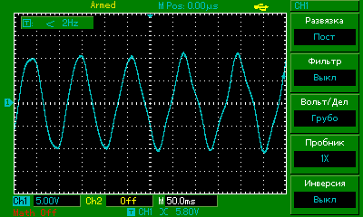
Рис. 8.2.4. Выходное напряжение холостого хода низкооборотного однофазного электрогенератора с дисковым ротором на постоянных магнитах [7] при частоте вращения ротора 1 об./с.
Ссылки:
04.07.2018
Альтернативные источники энергии
Компьютеры и
Интернет
Магнитные поля
Механотронные системы
Перспективные
разработки
Электроника и
технология